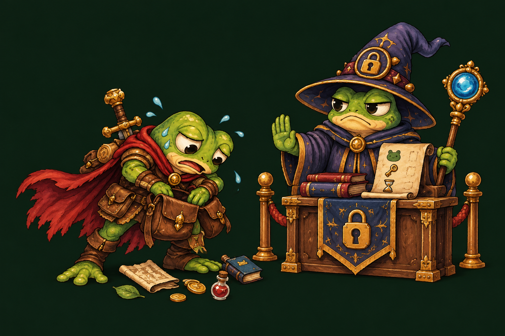

Alto lá, aventureiro!
O fiscal de tokens não te deixa passar.

A tua sessão expirou
Nem uma espada lendária te safa desta.Volta a entrar para continuar a tua aventura.
Voltar ao loginO fiscal de tokens não te deixa passar.

Nem uma espada lendária te safa desta.Volta a entrar para continuar a tua aventura.
Voltar ao login